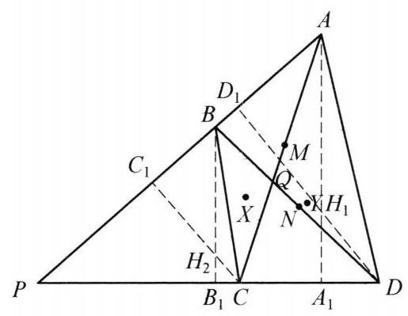

94 例 9：根心性质与三角形高线垂足共圆
94.1 题目
在锐角 \triangle {APD} 的边 {AP} 和 {PD} 上各取一点 B, C ,四边形 {ABCD} 的两条对角线相交于点 Q,\triangle {APD} 和 \triangle {BPC} 的垂心分别为 {H}_1,{H}_2 . 证明: 如果直线 {H}_1{H}_2 经过 \triangle {ABQ} 及 \triangle {CDQ} 的外接圆的交点 X ,那么,它必经过 \triangle {BQC} 和 \triangle {AQD} 的外接圆的交点 Y .
94.2 参考解答
如图 6-10,记 {AC},{BD} 的中点分别为 M, N ,以 {AC},{BD} 为直径作圆 {\omega }_1,{\omega }_2 . 作 A{A}_1 \perp {PD} 于 {A}_1, B{B}_1 \perp {PD} 于 {B}_1, C{C}_1 \perp \; {PA} 于 {C}_1, D{D}_1 \perp {PA} 于 {D}_1 ,则 {A}_1,{C}_1 在圆 {\omega }_1 上, {B}_1,{D}_1 在圆 {\omega }_2 上.

图 6-10
因为 {H}_{1}A \cdot {H}_1{A}_1 = {H}_{1}D \cdot {H}_1{D}_1 ,所以点 {H}_1 在圆 {\omega }_1 和圆 {\omega }_2 的根轴上. 同理 {H}_2 也在圆 {\omega }_1 和圆 {\omega }_2 的根轴上,则 {H}_1{H}_2 是圆 {\omega }_1 和圆 {\omega }_2 的根轴,于是
X{M}^2 - C{M}^2 = X{N}^2 - D{N}^{2}.
由 \angle {XBD} = \angle {XAC},\angle {XDB} = \angle {XCA} ，知 \triangle {XAC} \backsim \triangle {XBD} . 类似地有 \triangle {YBD} \backsim \triangle {YCA} .
设 \triangle {XAC} 和 \triangle {XBD} 的相似比为 k . 如果 X{M}^2 - C{M}^2 = X{N}^2 - D{N}^2 = 0 ，那么 \angle {BXD} = {90}^{ \circ } . 因为 \angle {ABX} = {180}^{ \circ } - \angle {AQX} = \angle {XQC} = \angle {XDC} ，所以 P, B, X ， D 四点共圆.
于是 \angle P = {180}^{ \circ } - \angle {BXD} = {90}^{ \circ } ，这与 \triangle {PAD} 是锐角三角形矛盾，则 X{M}^2 - \; C{M}^2 = X{N}^2 - D{N}^2 \neq 0 . 此时 {k}^2 = \frac{X{M}^2 - C{M}^2}{X{N}^2 - D{N}^2} = 1 ，即 k = 1 ，也即 {AC} = {BD}.
结合 \triangle {YBD} \backsim \triangle {YCA} ，知 \triangle {YBD} \cong \triangle {YCA} ，故 Y{M}^2 - C{M}^2 = Y{N}^2 - C{N}^2 ， 则点 Y 在圆 {\omega }_1 与圆 {\omega }_2 的根轴上,所以 {H}_1,{H}_2, Y 三点共线. 原问题得证.
注: 通过将 {H}_1{H}_2 变为两圆根轴去刻画 X, Y 两点,想法还是比较巧妙的.
94.3 解题思路与分析
这是一道非常精妙的竞赛几何题。之所以觉得“费解”，是因为这个证明跨越了垂心（高度性质）、圆的根轴（Power of a Point）、相似三角形与外接圆交点这几个看似不直接相关但内在紧密联系的数学工具。
为了让你彻底理解这个证明的动机和思维全景，我们可以像作者一样，倒过来拆解其背后的探索过程。整个思路可以分为四个核心突破口：
94.3.1 一、 核心观察：点 X 和 Y 是什么？怎么刻画？
题目中涉及 \triangle ABQ 和 \triangle CDQ 的外接圆交点 X，以及 \triangle BQC 和 \triangle AQD 的外接圆交点 Y。 * 找圆的交点：在平面几何中，两圆相交的交点通常不好直接通过坐标或繁琐的角度去硬算。但注意到 \triangle ABQ 和 \triangle CDQ 有一条公共边 AQ（或者从圆周角性质出发），交点 X 实际上满足一系列关于角度的等式。 * 关键性质转化：证明中写道： \angle XBD = \angle XAC, \quad \angle XDB = \angle XCA \implies \triangle XAC \sim \triangle XBD 这是怎么想到的？ 因为 X 是两圆交点，利用圆内接四边形的性质可以把交点 X 与顶点 A, C, B, D 的夹角联系起来。这一对相似三角形 \triangle XAC \sim \triangle XBD 表明，点 X 在以 AC 和 BD 为对应线段的相似变换中扮演了某种中心或关联角色。
94.3.2 二、 桥梁搭建：垂心 H_1, H_2 与以对角线为直径的圆
题目给出了 \triangle APD 的垂心 H_1 和 \triangle BPC 的垂心 H_2，而我们要证明直线 H_1H_2 经过 X 和 Y。 * 垂心的代数转化：垂心常常和垂直、高线相联系。证明中作了垂线 AA_1 \perp PD 和 CC_1 \perp PA 等。 * 为什么引入以 AC 和 BD 为直径的圆 \omega_1, \omega_2？ * 因为 AA_1 \perp PD 意味着 \angle AA_1D = 90^\circ，同理 CC_1 \perp PA 意味着 \angle CC_1A = 90^\circ。 * 这说明点 A_1, C_1 在以 AC 为直径的圆 \omega_1 上。 * 垂心 H_1 是 \triangle APD 的垂心，因此 H_1A \cdot H_1A_1 = H_1D \cdot H_1D_1（这是幂性质/根轴的经典形式）。 * 天才的一步：这个式子直接告诉我们，垂心 H_1 关于圆 \omega_1 和圆 \omega_2 的幂相等！因此，H_1 位于两圆 \omega_1 和 \omega_2 的根轴上。同理，H_2 也在这条根轴上。 * 结论：直线 H_1H_2 居然就是圆 \omega_1 和圆 \omega_2 的根轴！这就把原本毫无头绪的“垂心连线”转化为了“两圆的根轴”。
94.3.3 三、 核心突防：如何把交点 X 和根轴（或中点、圆的幂）联系起来？
我们已经知道 H_1H_2 是 \omega_1 和 \omega_2 的根轴。如果我们要证明 X 在这条直线上，只需要证明点 X 关于圆 \omega_1 和圆 \omega_2 的幂也相等即可（即 X 也在根轴上）。
- 设 M, N 分别是 AC, BD 的中点，圆 \omega_1, \omega_2 的半径平方与中点距离有关。
- 结合前面得到的相似三角形 \triangle XAC \sim \triangle XBD（相似比为 k）： 在相似三角形中，对应线段（如边长、中线、外接圆半径等）的比都等于相似比 k。
- 通过精巧的几何推导或坐标/向量关系可以得出点 X 到中点 M, N 的距离满足： XM^2 - CM^2 = k^2 (XN^2 - DN^2)
- 为什么 k=1？ 证明中通过反证法：如果 XM^2 - CM^2 = XN^2 - DN^2 = 0，会推导出 \angle P = 90^\circ，与“\triangle APD 是锐角三角形”矛盾。 因此该式不为 0，从而直接解出 k^2 = 1 \implies k = 1，即 AC = BD。
- 当 k=1 时，上式变为： XM^2 - CM^2 = XN^2 - DN^2 这恰好说明点 X 关于圆 \omega_1（以 AC 为直径，半径为 CM）和圆 \omega_2（以 BD 为直径，半径为 DN）的幂相等！
94.3.4 四、 顺理成章：推导点 Y
- 既然点 X 满足幂相等，说明 X 在两圆的根轴上。而 H_1, H_2 也在两圆的根轴上，因此直线 H_1H_2 就是该根轴。
- 对于另一个交点 Y，由于 \triangle YBD \sim \triangle YCA，完全同理可证 \triangle YBD \cong \triangle YCA（因为前面已经得出 AC=BD，即对应边相等），从而同样有： YM^2 - CM^2 = YN^2 - CN^2
- 这说明点 Y 也满足关于圆 \omega_1 和圆 \omega_2 的幂相等，因此 Y 也在这条根轴上。
- 综上所述，H_1, H_2, X, Y 四点共线（都在圆 \omega_1 和 \omega_2 的根轴上），原题得证。
94.3.5 💡 总结解题者的思维路径（顺藤摸瓜 vs 溯本求源）
- 直觉层：看到垂心 H_1, H_2，立刻想到高线，进而联想到直角三角形、四点共圆、以及以边为直径的圆。
- 转化层：发现 H_1, H_2 满足关于圆 \omega_1, \omega_2 的幂等关系，意识到“根轴”是连接这群几何元素的天然纽带。
- 目标层：题目要证 H_1H_2 经过 X（和 Y），本质就是要证明 X 和 Y 也在这个根轴上。
- 工具层：利用 X, Y 作为外接圆交点的相似角关系（\triangle XAC \sim \triangle XBD），把交点问题转化为长度与中点的平方差关系，最终通过不等式排除平凡情况，锁定 k=1 和根轴方程。
94.4 分步证明
94.4.1 步骤 0：已知条件与几何构型
在锐角 \triangle APD 的边 AP 和 PD 上各取一点 B, C，四边形 ABCD 对角线相交于 Q。 \triangle APD 和 \triangle BPC 的垂心分别为 H₁ 和 H₂。 已知前提 直线 H_1H_2 经过 \triangle ABQ 与 \triangle CDQ 外接圆的交点 X。 求证目标 直线 H_1H_2 必经过 \triangle BQC 与 \triangle AQD 外接圆的交点 Y。
94.4.2 步骤 1：① 构造直径圆与高线垂足
记 AC, BD 的中点分别为 M, N，以 AC, BD 为直径分别作圆 ω₁, ω₂。 作高线：AA_1 \perp PD 于 A_1，BB_1 \perp PD 于 B_1，CC_1 \perp PA 于 C_1，DD_1 \perp PA 于 D_1。 由于 \angle AA_1C = \angle AC_1C = 90^\circ，故垂足 A_1, C_1 在圆 \omega_1 上； 同理 \angle BB_1D = \angle BD_1D = 90^\circ，故垂足 B_1, D_1 在圆 \omega_2 上。
94.4.3 步骤 2：② 垂心圆幂相等 ⇒ H₁H₂ 为根轴
在 \triangle APD 中，H_1 是垂心，AA_1, DD_1 为高，故四点 A, D, A_1, D_1 共圆（以 AD 为直径）。 由圆幂定理（割线定理）： H_1A \cdot H_1A_1 = H_1D \cdot H_1D_1 这表明 H_1 对圆 \omega_1 与 \omega_2 的圆幂相等，即点 H_1 在两圆的根轴上。 同理在 \triangle BPC 中，垂心 H_2 满足 H_2B \cdot H_2B_1 = H_2C \cdot H_2C_1，故 H_2 亦在根轴上。 因此，直线 H₁H₂ 恰好是圆 ω₁ 与圆 ω₂ 的根轴（Radical Axis）！
94.4.4 步骤 3：③ 点 X 位于根轴上 ⇒ 圆幂等式
作 \triangle ABQ 和 \triangle CDQ 的外接圆，两圆相交于 Q 与第二交点 X。 已知条件给定直线 H_1H_2 经过交点 X。 由于 H_1H_2 是圆 \omega_1 与 \omega_2 的根轴，故点 X 对两圆的圆幂严格相等： \mathrm{Pow}(X, \omega_1) = \mathrm{Pow}(X, \omega_2) 展开即得几何圆幂等式： XM^2 - CM^2 = XN^2 - DN^2（其中 CM = \frac{AC}{2}, DN = \frac{BD}{2}）。
94.4.5 步骤 4：④ 螺旋相似 △XAC ~ △XBD ⇒ AC = BD
由外接圆圆周角性质易知：\angle XBD = \angle XAC 且 \angle XDB = \angle XCA，故 \triangle XAC \sim \triangle XBD。 XM, XN 分别为对应中线，设相似比为 k = \frac{AC}{BD} = \frac{CM}{DN} = \frac{XM}{XN}。 若圆幂 XM^2 - CM^2 = 0，则 \angle BXD = 90^\circ，导得 P, B, X, D 四点共圆，从而 \angle P = 180^\circ - \angle BXD = 90^\circ，与 \triangle APD 是锐角三角形矛盾！ 因此圆幂非零，由 XM^2 - CM^2 = k^2(XN^2 - DN^2) 代入圆幂等式得： k^2 = 1 \implies k = 1 \implies AC = BD（对角线严格等长！）。
94.4.6 步骤 5：⑤ 对偶相似 △YAC ≅ △YBD ⇒ Y 圆幂相等
同理，作 \triangle BQC 和 \triangle AQD 的外接圆，两圆相交于 Q 与第二交点 Y。 由完全对称的圆周角关系，同样有 \triangle YAC \sim \triangle YBD。 因为上一步已严格证明相似比 k = \frac{AC}{BD} = 1，故 \triangle YAC \cong \triangle YBD（全等）！ 对应中线必等长：YM = YN，且半弦 CM = DN。 故代入圆幂计算必有： YM^2 - CM^2 = YN^2 - DN^2 \implies \mathrm{Pow}(Y, \omega_1) = \mathrm{Pow}(Y, \omega_2)。
94.4.7 步骤 6：⑥ 最终结论：直线 H₁H₂ 必经过点 Y
点 Y 对圆 \omega_1 与圆 \omega_2 的圆幂完全相等，意味着 点 Y 位于圆 \omega_1 与 \omega_2 的根轴上。 而步骤 ② 已经证得圆 \omega_1 与 \omega_2 的根轴就是直线 H_1H_2！ 因此，点 Y 必定在直线 H₁H₂ 上！ 四点 X, H_1, Y, H_2 严格共线于根轴之上，原命题全部得证！